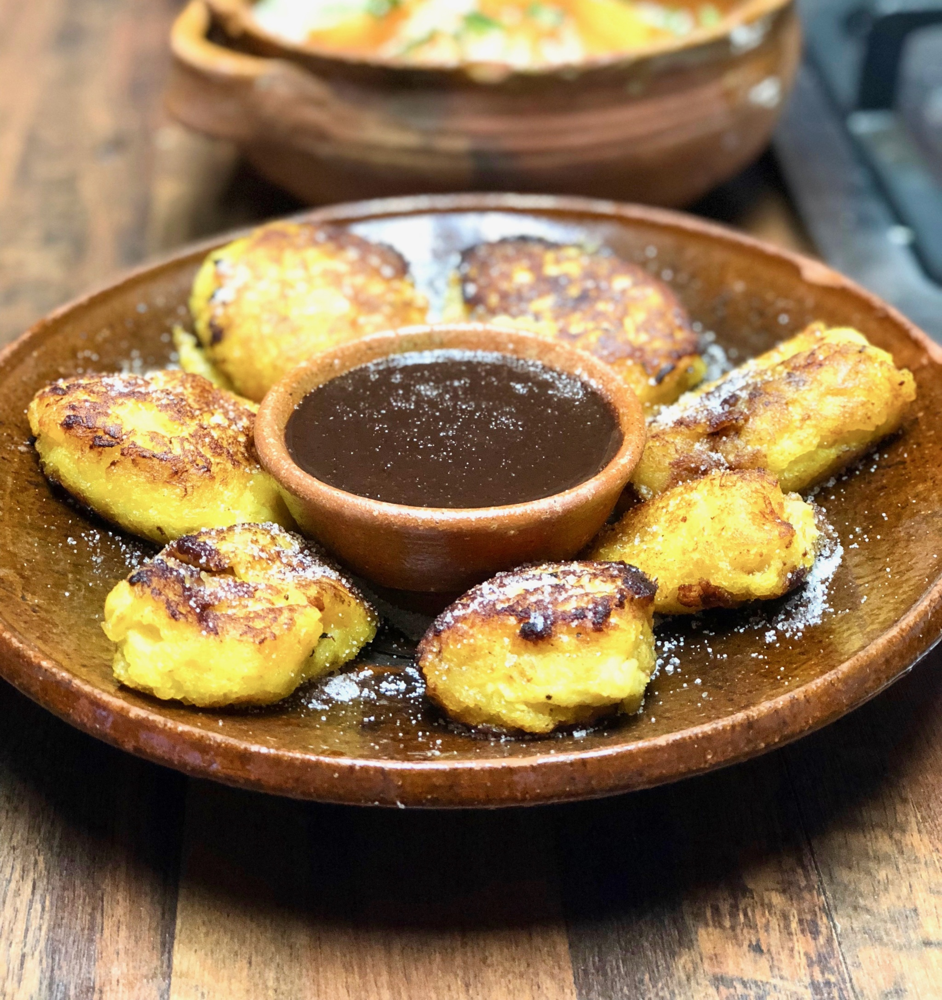
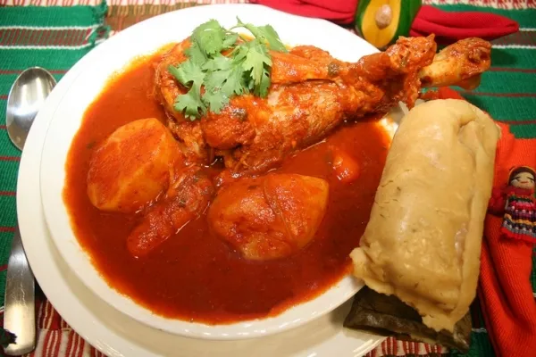
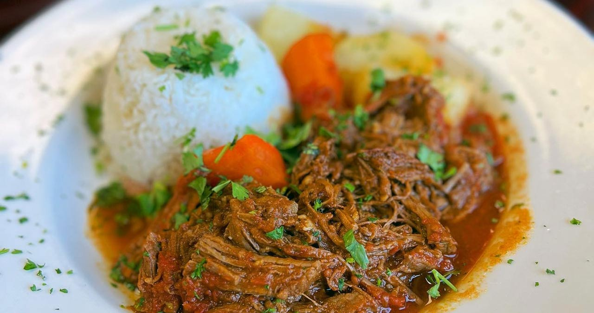

Rellenitos de Plátano
Postre dulce de plátano maduro relleno de frijoles negros dulces. Se fríen y se espolvorean con azúcar.

Postre dulce de plátano maduro relleno de frijoles negros dulces. Se fríen y se espolvorean con azúcar.

Sopa sustanciosa de pavo (chompipe) y especias, de origen prehispánico. Se acompaña con arroz y tamalitos.

Carne de res deshebrada (hilachas) cocida lentamente en un recado de tomate. Se sirve con papas y arroz.